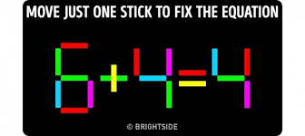

| S.NO | Mind Game | Game Play | Type | Difficulty Level |
|---|---|---|---|---|
| 1 | |
This is a simple creative question that you have to find out the mistake given in the pic by observing the colours | By doing this type of games you will completely merge into the quest and you will feel free form stress | 2 |
| 2 | This is a problem solving game in this you have to do some maths and try to fill the unknown part | These type of games have more than one answer so they will improve you IQ ands makes you creative | 3 | |
| 3 |  | In this given pic, a equation is constructed by some sticks and you have to make the equation mathematically correct by moving a single stick | These type of games have more than one answer so they will improve you IQ ands makes you creative | 5 |
| 4 | In this given picture, you have to find the total number of triangles ,no matters the size ,you have to study the picture in each and every direction. | This type of questions are very satisfying and you can improve your observation skills from these questions | 4 |
Follow us on
© 2022 GRUNDEN ZEN. All rights reserved